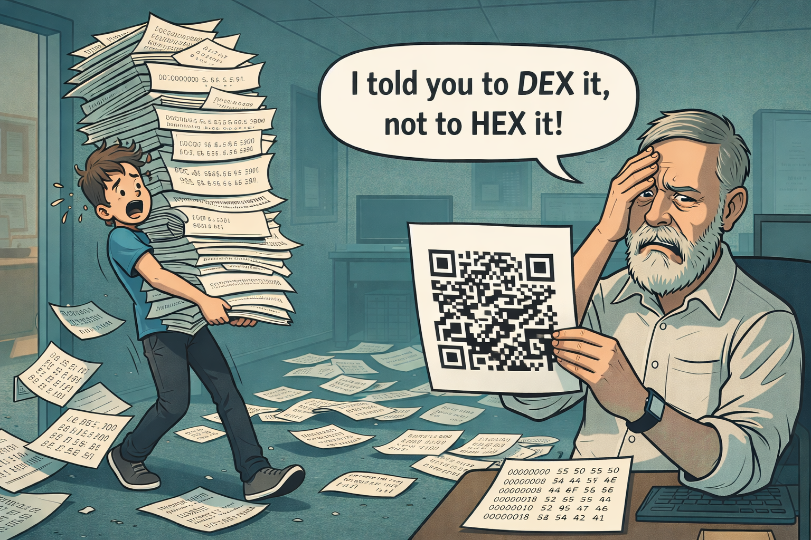

You found Dennis' secret 'stache
Curiosity is rewarded in the Forge.
You have discovered one of the hidden artifacts of the Dennis project.
Below you will find a small transformation artifact that demonstrates how Dennis converts hardcoded strings into localization-ready code.

The First Artifact
This artifact converts a simple Python program with hardcoded strings into a version that loads translations from JSON dictionaries.
It demonstrates the deterministic transformation pipeline:
- deterministic transformation plans
- portable artifacts
- reversible code modifications
Download the Artifact
Scan the QR or download the artifact directly.
Try it Yourself
Clone the demo repository containing the original Python example:
Inspect the Artifact
This reveals the artifact metadata and transformation payload.
Even hidden artifacts carry lineage.
Rehydrate the Transformation
This restores the transformation plan and dictionary into your local project.
Apply the Transformation
Your Python file will now load translations from the JSON dictionaries.
Try the Hidden Spanish Translation
Dennis artifacts support internationalization.
Try running the transformed program with:
You should see the program output in Spanish.
Undo the Transformation
Dennis transformations are reversible.
If you want to return the project to its original state:
Your repository will return to its initial state without needing to re-clone the project.
Forge Your Own Artifact
You can create your own Dennis artifacts.
Artifacts can be shared, inspected, verified and applied anywhere.
Artifact verified. Lineage intact.